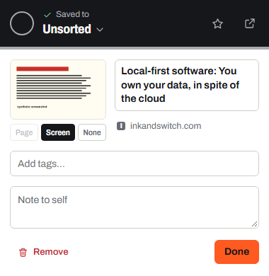
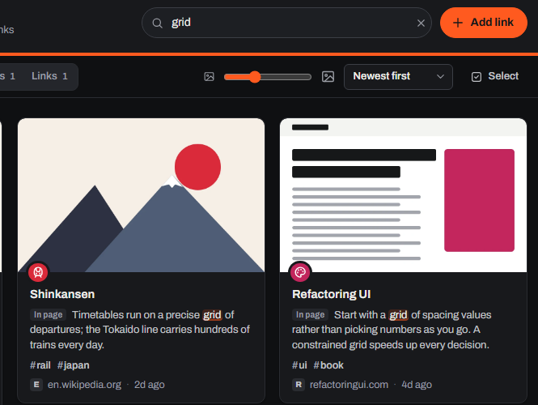
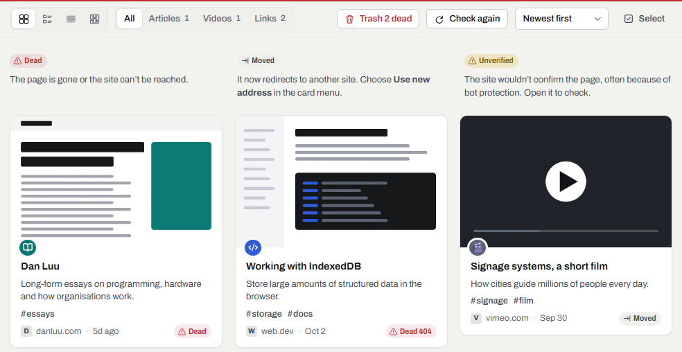

Bookmarks on lines.
Linemark is a bookmark manager for Chrome and Edge. It keeps your bookmarks on colour-coded lines, finds any page by the words inside it, and checks for broken links. All of it lives in your browser.
Try it: a sample library
Lines
Tags
A sample library to play with. Choose a line or a tag, or search the words inside the pages.
Save in one gesture
Saving takes one click. Linemark keeps the page's title, description and a cover image, stored on your computer. Filing can wait: new saves go to Unsorted until you put them on a line.
- Toolbar button
- Saves the page you're on, then lets you pick a line, add tags or a note.
- Keyboard
- Alt + Shift + S saves it without touching the mouse.
Alt + Shift + L opens your library. - Right-click
- Save to Linemark works on any page, and on any link inside one.
- Lines and branches
- Type Cooking/Baking in the line picker to file a link straight onto a new Baking branch under Cooking.
- Highlights and images
- Right-click selected text to keep it as a highlight of the page, or right-click an image to save it, stored on your computer with the page it came from.
- Several lines
- A link can stop on several lines at once, like an interchange.
- Tabs and tab groups
- Save a whole window of research in one go, keep its tab groups as lines, or open a line as a tab group in its colour.
- Suggestions
- Where your browser offers built-in AI, Linemark can suggest a line, tags and a summary, worked out on your computer.
- Bookmarks you have
- Import Chrome bookmarks or Edge favorites in one click. Folders become lines.

Find anything again
You remember what a page said, not what it was called. Linemark searches the text of the pages you save, and shows you the passage that matched.
- Full text
- Titles, tags, notes and the words on the page itself.
- Filters
- #tagsite:type:videois:favis:broken
- Address bar
- Type lm (lower-case L, M), then Space, to search Linemark from the address bar.
- Smart lines
- Keep a search, like #tag or site:, as a line that fills itself.
- Departures
- Give a link a day to come back to, and it waits on the Departures board on that day.
- Five views
- Cards, list, compact headlines, a moodboard, and a network map that draws your library as a transit map, each link a station in the shape of its kind.
- Make it yours
- Give each line a site’s logo, like Reddit or GitHub, one of 240 built-in icons or any emoji. Recolour every line after London, Paris, Tokyo, New York, Berlin or Seoul, or give a line a colour of its own.
- Your year
- Linemark Wrapped shows your year on the lines, month by month, with a picture to share.

Keep links healthy
Pages move and disappear. Linemark checks your links and sorts out the ones that need attention.
- Link check
- Every link is sorted, so you only fix what's really broken.DeadMovedUnverified
- Moved pages
- Update a bookmark to its new address in one click.
- Duplicates
- Finds the same page saved twice and merges tags and notes into the copy it keeps.
- Trash
- Nothing is deleted straight away. Undo, or restore from Trash.

Private by default
Linemark is local by default. There is no Linemark account and no Linemark server, so there is nothing for anyone to collect.
- Your library
- Stored in your browser profile, on your computer. Covers are downloaded once and kept there too.
- Accounts and tracking
- None. No sign-up, no analytics, no ads, no crash reporting.
- Going online
- Only when you ask: saving a page, checking links or fetching previews. Linemark then talks to those websites directly.
- Sync
- Off unless you turn it on. Then your library is encrypted on your device with your passphrase before it goes to your own Google Drive.
- Leaving
- Export to HTML, which any browser can import, or take a full backup, any time.
Your Google account
Linemark only asks for your Google account if you turn on sync, so your bookmarks can follow you to other computers. Everything else works without it.
Linemark's use and transfer of information received from Google APIs adheres to the Google API Services User Data Policy, including the Limited Use requirements. The full details are in the privacy policy.
Add Linemark to your browser
Free, with no account. Brave, Vivaldi and other Chromium browsers install it from the Chrome Web Store.